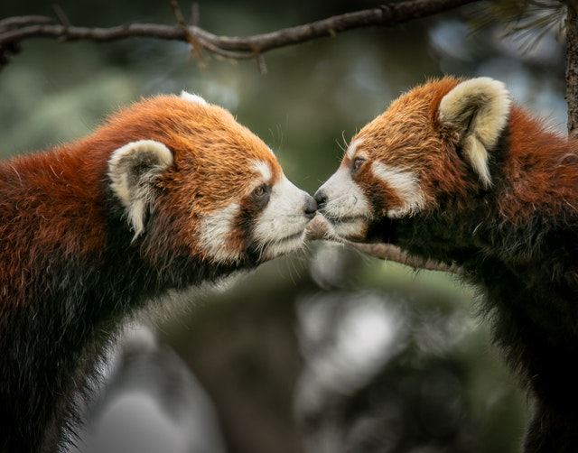

By bringing people and animals together, zoos educate the public and foster an appreciation of the other species.
Zoos save endangered species by bringing them into a safe environment, where they are protected from poachers, habitat
loss, starvation, and predators.
Many zoos have breeding programs for endangered species. In the wild, these individuals might have trouble finding mates
and breeding, and species could become extinct.
Reputable zoos accredited by the Association of Zoos and Aquariums and are held to high standards for the treatment of
their resident animals. According to the AZA, accreditation means, "official recognition and approval of a zoo or
aquarium by a group of experts."

A good zoo provides an enriched habitat in which the animals are never bored, are well cared for, and have plenty of
space.
Zoos are a tradition, and a visit to a zoo is a wholesome, family activity.
Seeing an animal in person is a much more personal and more memorable experience than seeing that animal in a nature
documentary and is more likely to foster an empathetic attitude toward animals.
Some zoos help rehabilitate wildlife and take in exotic pets that people no longer want or are no longer able to care
for.
Both accredited and unaccredited animal exhibitors are regulated by the federal Animal Welfare Act, which establishes
standards for animal care.